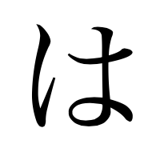

The Particle は(wa)
The 1st main function
Particle は is usually refered to as the topic marker because it come after the topic of the sentance and it tells the listener what the sentance is about. In English we can translate it as "as for" or "speaking of".
How it function in a sentance:
(たなかさんはせんせいです）
田中さんは先生です
-This means: Mr Tanka is a teacher.
Breaking it down:
（たなかさん）田中さん :Mr.Tanaka
は :marking Mr.Tanaka as the topic of the sentance.
先生 :Teacher
です :This is the copula which is the equvalant to "Is" "am" or "are" in English.
There is an important point to remember with this particle pronouncation. This particle is written the same way as the hiragana は(ha) but when it is used as a particle it is pronounced wa.
The 2nd main function
We can also use this particle as contrast between two item or ideas. When we use it in this way we mark the two items we contrasted with は. How it work: If you want to contrast a object of a sentance you replace the particle を/が with は. We will explain further with examples.
（さかなはたべます。でも、にくはたべません)
魚はたべます。でも、肉は食べません
-I eat fish, but I don't eat meat.
*The topic 'I' as in 'I eat' is implied in the sentance.
Lets break it down. We will start with the orignal sentances:
To say "I eat fish" is:(sakana o tabemasu) 魚をたべます
The object is 魚 (sakana) so it's marked by the object particle を
To say "I don't eat meat" is:(niku o tabemasen) 肉をたべません
Meat is (Niku) 肉
The negative form of (Tabemasu) 食べます is (tabemasen) 食べません.
If we were to add a topic it would be (Watashi wa) 私は肉を食べません.
Now to contrast the two sentances we replace the object particle を with は so that gives us:
(Sakana wa tabemasu. demo, niku wa tabemasen.)魚は食べます。でも、肉は食べません
(Demo)でも means 'but'.
So using は in this sentance we are putting contast between the two items. Along with the particle を, が can also be replaced with は to show contrast.
Back
ParticleQuiz
Next